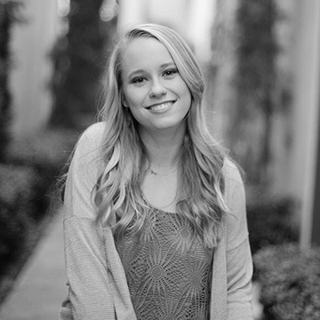
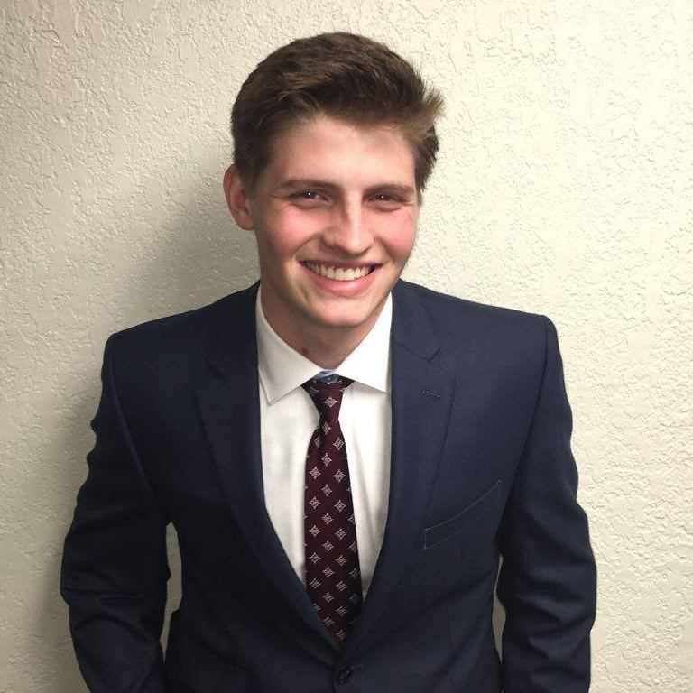
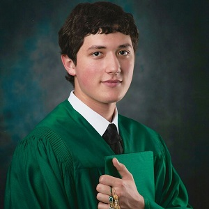
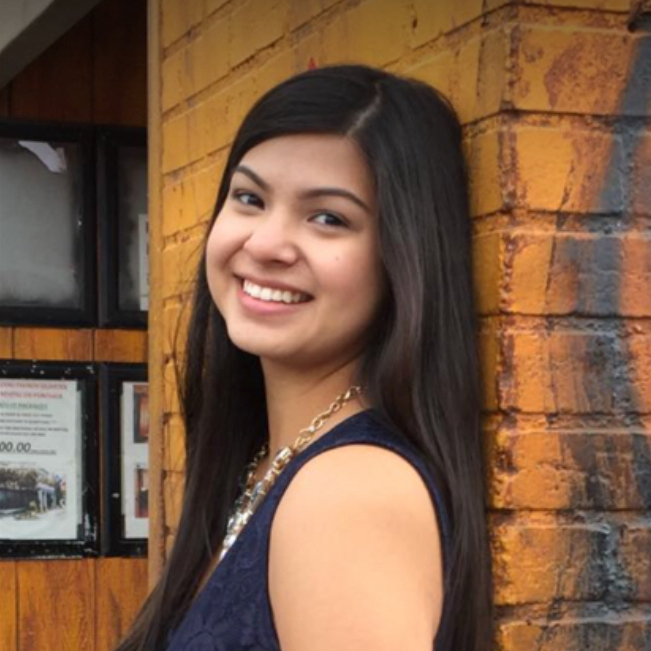
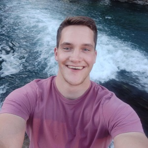
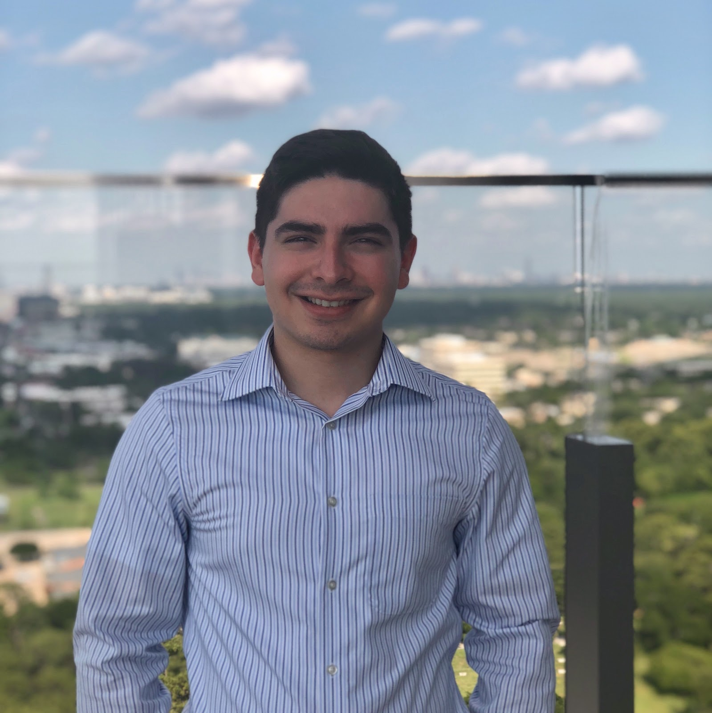
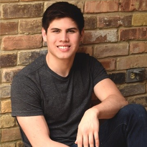
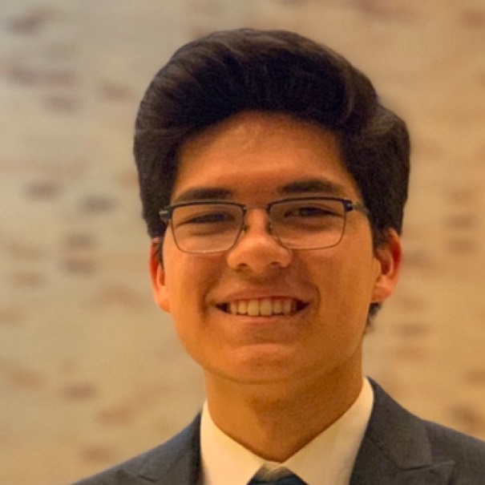
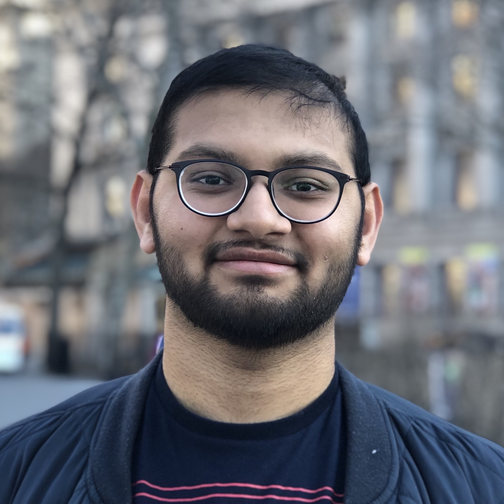
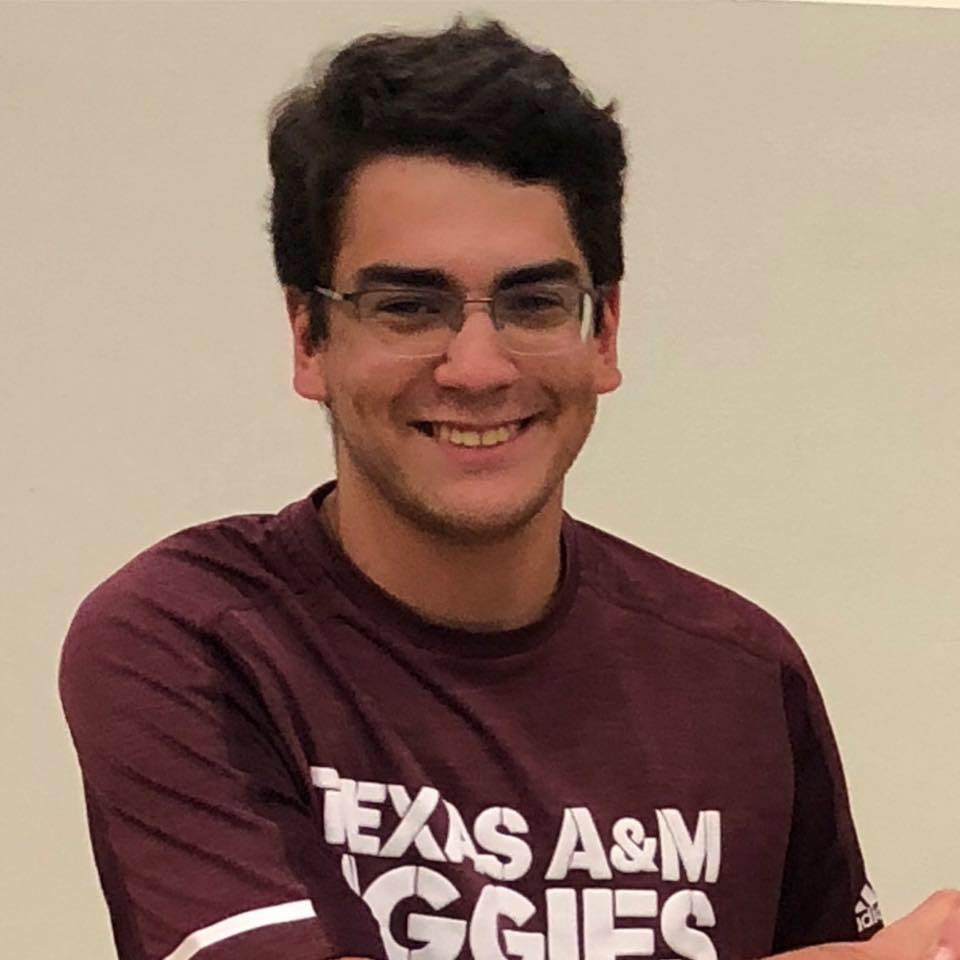

Hannah Gooden, President, Computer Science '20. Hannah has two minors in astrophysics and cybersecurity, and is very interested in the way scientists use computing to do research. She also loves traveling, and spent a whole summer in New Mexico, where she crewed for a hot air balloon team on her weekends.
Gabriel Britain, Vice President, Computer Science '20. When Gabriel isn't organizing hackathons or reading papers for his research, you can find him whipping something up in the kitchen, or 30 feet underwater scuba diving!
Feras Khemakhem, Project Management Chair, Computer Science '20. Feras specializes in Computer Graphics and animation, and hopes to continue this work into the field. Personal hobbies include traveling to eat good food, and gaming.
Marissa Soria, Events Chair, Electronic Systems Engineering Technology '20. Marissa has a special interest in cyber security and hardware integration and in her free time enjoys baking and gardening.
Thomas McDonald, Co-Workshops Chair, Computer Science '20. Thomas is a senior computer science student that has experience in several industries and loves to work with people to meet objectives. Outside of school and work, he enjoys rock climbing and spending time with family and friends.
Edgar Martinez, Co-Workshops Chair, Computer Science '20. Edgar is a computer science major who enjoys learning from others and helping others learn. It is likely that he has had more tacos than any other member in the Aggie Coding Club.
Mitchell Eldridge, Officer in Training, Computer Science '20. Mitchell is interested in cyber security, machine learning, and teaching. With his free time, he enjoys rock climbing and hiking.
Alsten Okpisz, Officer in Training, Computer Science '21. Alsten enjoys front-end web development and running Dungeons and Dragons games for friends.
Shrey Shah, Officer in Training, Computer Engineering '21. Shrey loves to code in Python and is extremely interested in Machine Learning and Cloud Computing. He is also a magician and has performed in stage shows and street magic.
Yonathan Zetune, Officer in Training, Mechanical Engineering '22. Yonathan is a mobile development aficionado and is trying to transfer into CS. In his free time he enjoys watching the TechLead or The Good Place and listens to jazz, otherwise known as elevator music, when he can.